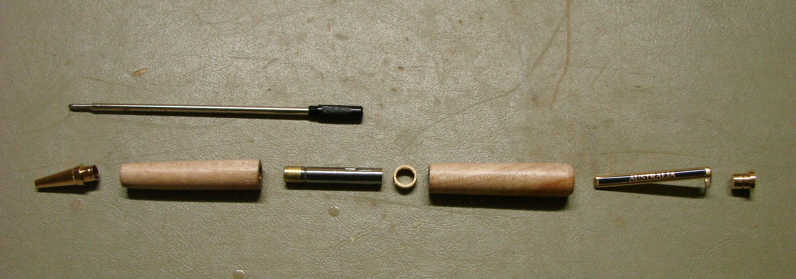
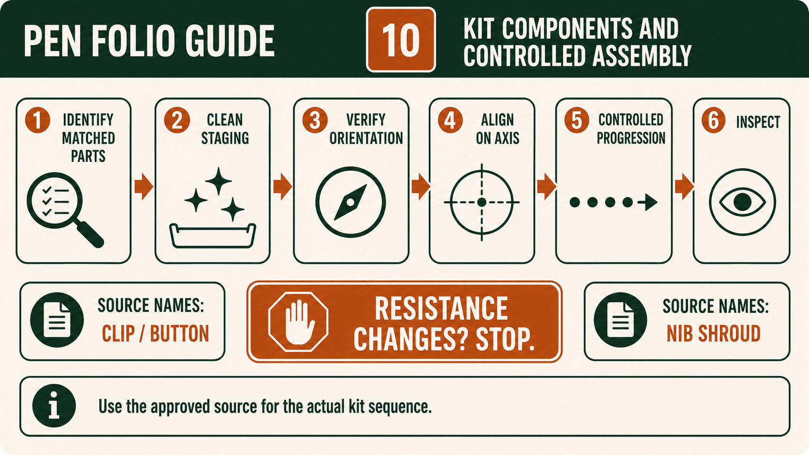
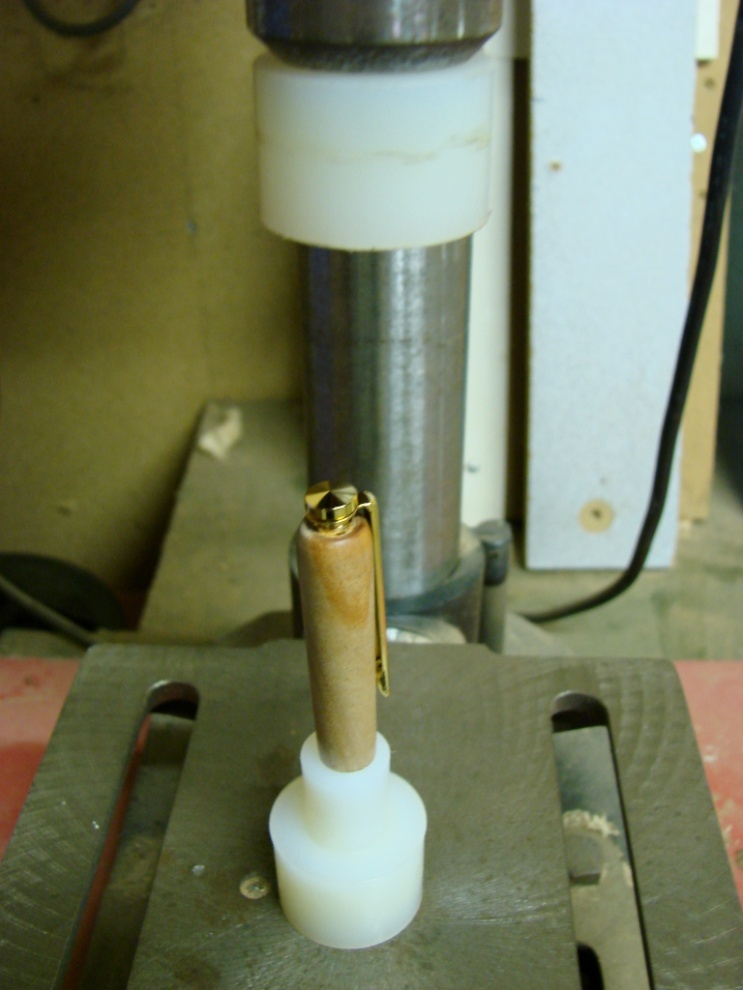

Module presentation
Learn with the slides
Use the presentation to preview Identifying and staging the Pen kit components for assembly, Assembling the clip/button and nib shroud in the approved sequence, Preventing misalignment and damage during Pen assembly before working through the theory, videos, checks and written evidence.
Weeks 13-14
This module
Stage the matched kit, follow the approved clip/button and nib-shroud sequence, and stop before misalignment causes damage.
Your work
Student details
Your entries save automatically in this browser. Use Print / Save PDF before leaving the page.
Theory 1
Identifying and staging the Pen kit components for assembly
Identifying and staging the Pen kit components is a quality-control step completed before assembly begins. The approved Pen Making resource is the authoritative reference for recognising the supplied parts and understanding how they relate to the finished project. Verified components include the kit's clip/button and nib shroud, while the two finished timber bodies belong to one matched kit. Students should not rely on memory, another student's parts or an online diagram. A careful inventory confirms that the correct kit, timber bodies and identified components are present before any assembly decision is made.
An inventory is more than counting loose items. It involves comparing each visible component with the approved kit resource and checking that it belongs to the same supplied kit. Students should keep the plastic kit bag, labelled container or other teacher-approved identification with the parts until the inventory has been confirmed. The clip/button and nib shroud should be recognised by the names used in the authoritative resource. Any other component must be identified only through that resource or teacher direction. Students must not invent a complete component schedule or assume that a similar-looking part has the same purpose.

Clean staging means arranging the matched kit components in an organised area where they can be seen, checked and protected. Unrelated tools, offcuts, dust and parts from other kits should be kept away from the staging area. The two finished timber bodies should remain together and in their intended relationship so that their grain connection is not lost. A clear arrangement reduces the chance of mixing parts, overlooking damage or beginning with an incomplete kit. The teacher demonstration controls how components are handled and positioned, while the website explains why organisation and verification matter.
Orientation must be checked without guessing an assembly order. Earlier reference work established the relationship between the two timber bodies, and that relationship should still be understandable at the assembly stage. Students compare the grain, figure and any approved orientation references before the parts are moved further. The clip/button and nib shroud are also checked against the approved resource so they are not confused or reversed through assumption. Exact placement and assembly sequence remain controlled by the kit instructions and teacher demonstration. When orientation is uncertain, the correct action is to stop and request a teacher check.
Finished surfaces require protection because scratches, dents, contamination or careless handling can weaken the quality achieved during turning, sanding and finishing. Components should be placed on the teacher-approved clean surface and handled only as required. Students should inspect the two timber bodies and the identified kit parts under suitable lighting for visible damage, residue or unusual condition. A component that appears bent, marked, missing or different from the authoritative resource must be reported. It should not be forced, altered, swapped or repaired without teacher direction, because an improvised response may damage the matched kit or create an unsafe assembly condition.
Folio evidence should prove that the student completed an organised inventory and quality check before assembly. A useful record may include an overall photograph of the clean staging area, a closer image identifying the clip/button and nib shroud, and a view showing the two finished timber bodies kept as one matched pair. Captions should explain what was checked, how the components were compared with the approved resource and whether teacher approval was obtained. If a part was missing, damaged or uncertain, record the decision to stop and the teacher-directed outcome. This demonstrates competent preparation rather than simply presenting a photograph of loose parts.
- Keep the two finished timber bodies and all supplied components with their matched Pen kit.
- Identify the clip/button and nib shroud using the approved Pen Making resource.
- Stage parts in a clean, organised area that protects finished surfaces.
- Check orientation and visible condition without inventing an assembly order.
- Stop and report any missing, damaged, mixed or uncertain component before assembly.
Theory 2
Assembling the clip/button and nib shroud in the approved sequence
Assembling the clip/button and nib shroud is a controlled Pen-making stage in which prepared kit components are joined to the finished timber bodies. The approved Pen Making resource confirms that these named components are part of the project, but it remains the authority for their actual orientation and sequence. The supplied kit information and teacher demonstration also control the approved pressing or support method and the criteria used to accept the completed result. Students must not rely on memory, another kit or an online example, because similar-looking components may have different relationships and requirements.

Before assembly, identify the mating parts by comparing them directly with the authoritative kit resource. Mating parts are components designed to meet or join in a particular relationship. Correct identification matters because forcing the wrong parts together may damage the component, the finished timber body or both. The clip/button and nib shroud should remain with the matched kit, and the two timber bodies should retain their intended grain relationship. If a component cannot be identified confidently, the correct response is to stop, preserve the clean arrangement and ask the teacher before attempting any connection.
Alignment should be checked before controlled assembly begins. The component and the opening or surface it is intended to meet must correspond as shown in the approved resource and demonstration. Students should observe whether the parts appear straight, centred and supported, without inventing a dimension or tolerance. The finished timber bodies also require protection from scratches, dents and uneven loading. The teacher-approved support method is therefore part of the quality process, not merely a convenience. A clean support arrangement helps protect the finish and allows the student and teacher to see whether alignment remains consistent.
Assembly should progress gradually and under control. Gradual movement gives the student opportunities to stop, inspect and confirm that the mating parts continue to align as intended. Unexpected resistance is not a signal to apply greater force. It may indicate misalignment, an incorrect component, contamination, damage or another condition that requires teacher judgement. Students should stop immediately if the part begins to enter unevenly, the timber body shifts, the finish is threatened or the component behaves differently from the demonstration. The teacher determines whether the setup can be corrected and whether assembly may continue.
Inspection occurs throughout the stage and again when the teacher-approved sequence is complete. Students compare the assembled areas with the supplied kit reference and the demonstrated acceptance criteria. They look for visible misalignment, gaps, damage, marking of the finished surface or components that do not appear to be seated as approved. A part that looks attached is not automatically acceptable. Quality depends on correct identification, controlled alignment, protection of the timber bodies and confirmation by the teacher. Students must not improvise a repair, reverse the sequence or disassemble the kit unless specifically directed.
Folio evidence should show preparation, control and inspection rather than only the final Pen. A useful sequence may include the correctly identified clip/button and nib shroud in the clean staging area, the supported timber bodies before assembly, and the completed teacher-approved result. Captions should explain which mating parts were identified, how alignment and surface protection were checked, and where the student paused for inspection. If resistance or misalignment occurred, record the observation, the decision to stop and the teacher-directed outcome. This evidence demonstrates competent decision-making and links careful assembly with the final quality of the Pen.
- Identify the clip/button and nib shroud using the supplied kit resource.
- Confirm mating-part orientation and sequence through the teacher demonstration.
- Support and protect the finished timber bodies by the approved method.
- Progress gradually, checking alignment throughout the assembly stage.
- Stop for resistance, movement, damage or uncertainty and seek teacher approval.
Theory 3
Preventing misalignment and damage during Pen assembly
Preventing misalignment and damage during Pen assembly relies on disciplined preparation and careful observation rather than force. The approved Pen Making resource, supplied kit information and teacher demonstration define how components are intended to meet. Students are responsible for checking that those conditions are present before and during assembly. Misalignment can begin with something small, such as an unnoticed particle on a contact surface or a slight rotation of a part. If it is not identified early, it can lead to visible gaps, marked finishes or a result that does not meet the approved criteria. The safest approach is to prepare, check and proceed in a controlled way with teacher approval at key points.
Clean contact surfaces are essential because they allow mating parts to meet as designed. Dust, residue or contamination can interfere with contact and create uneven seating. Students should ensure that surfaces are prepared and kept clean according to the approved process, without introducing unverified cleaning products or methods. Cleanliness supports accurate alignment and reduces the chance that a component will enter unevenly. If a surface appears uncertain, it should be inspected and confirmed with the teacher rather than assumed to be acceptable.

Verified orientation ensures that each component is positioned as intended before any joining occurs. The two finished timber bodies should remain as a matched pair, with their grain relationship preserved from earlier stages. The clip/button and nib shroud must be identified using the approved resource and teacher demonstration so they are not confused or reversed. Orientation is not guessed from appearance alone; it is confirmed against the authoritative information. When orientation is uncertain, the correct response is to stop and ask, not to try different positions until one seems to fit.
Axial alignment means that the parts meet along their intended centre line without tilting, twisting or drifting out of position. Students observe whether components appear straight and centred as they begin to come together. This observation is supported by the approved support method, which protects the finished timber bodies from uneven loading. A protected surface helps maintain the quality achieved during turning and finishing. If the timber shifts, the finish is threatened or the component begins to enter at an angle, the process must stop so the alignment can be checked with the teacher.
Controlled progression and observation are key to preventing damage. Assembly should move in small, deliberate steps that allow the student to check alignment and surface condition regularly. Increased resistance is important information. It may indicate misalignment, contamination, incorrect identification or another issue that requires attention. It is not a signal to apply more force. Students should stop immediately, hold the setup safely and seek teacher guidance. Improvised fixes, such as forcing parts, reversing the process or attempting an unapproved correction, can cause permanent damage and should be avoided.
Folio evidence should demonstrate how misalignment and damage were prevented, not just that assembly was completed. A strong record may include images of clean staged components, confirmed orientation, protected support of the timber bodies and a teacher-approved checkpoint before and after assembly. Captions should explain what was checked, what was observed and how decisions were made. If resistance or misalignment was encountered, the evidence should show the decision to stop and the teacher-directed outcome. This demonstrates that careful inspection, controlled action and respect for the approved process led to a successful Pen assembly.
- Check that all contact surfaces are clean and free from contamination before assembly.
- Verify the orientation of all components using the approved resource and teacher demonstration.
- Maintain axial alignment and protect finished surfaces throughout the process.
- Progress gradually, observing alignment and surface condition at each step.
- Stop immediately if resistance, misalignment or uncertainty occurs and seek teacher approval.
Guided practice
Weeks 13-14 knowledge checks
Choose an answer, check it and use the progressive hints and feedback to improve.
Apply your learning
Scaffolded written responses
Write first, use the feedback prompts, then compare your reasoning with the appropriate response example.
Finish the two-week block
Save your evidence
Your work saves in this browser, but browser storage is not the official submission. Save the completed page as a PDF before changing devices or clearing browser data.
No marks, answers or personal information are sent from this webpage.